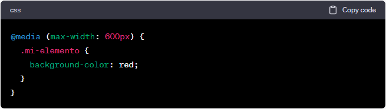

¿Que es Media Queries?
Una media query, también conocida como consulta de medios en español, es una técnica utilizada en desarrollo web para aplicar estilos CSS específicos según las características del dispositivo o las características del medio en el que se está visualizando una página web. Las media queries permiten adaptar el diseño y la apariencia de un sitio web a diferentes tamaños de pantalla, resoluciones, orientaciones, capacidades del dispositivo y otros aspectos del medio de visualización. Esto es especialmente importante en el diseño web responsive, donde se busca que una página se vea y funcione bien en una amplia gama de dispositivos, desde computadoras de escritorio hasta teléfonos móviles. En CSS, las media queries se definen utilizando la regla @media y se especifican las condiciones en las que se aplicarán los estilos definidos dentro de la consulta. Por ejemplo, se puede establecer una media query para aplicar estilos específicos solo cuando la anchura de la ventana del navegador sea menor que cierto valor, o cuando la pantalla esté en modo apaisado en dispositivos móviles. Aquí hay un ejemplo de una media query que cambia el color de fondo de un elemento HTML cuando la anchura de la ventana del navegador es menor o igual a 600 píxeles:
En este caso, la regla CSS dentro de la media query se aplicará solo cuando la anchura de la ventana sea igual o menor a 600 píxeles. Las media queries son una herramienta poderosa para crear diseños web adaptables y brindar una experiencia de usuario óptima en diferentes dispositivos y contextos de visualización.